Tydzień 0–2
Wykop i ławy
Geodeta, koparka, chudy beton, zbrojenie i betonowanie ław.
Własne brygady, zero podwykonawców, stan surowy w 8–14 tygodni. Warszawa i okolice, ponad 100 zrealizowanych domów.
JAS-BUD to firma budowlana, która od ponad siedmiu lat realizuje domy jednorodzinne od fundamentów po stan surowy otwarty. Zaczynaliśmy jako podwykonawca dużych deweloperów, dziś budujemy przede wszystkim dla klientów indywidualnych w Warszawie i okolicach.
Naszą siłą jest doświadczenie, terminowość i uczciwe podejście. Stawiamy na dobrą komunikację, jakość wykonania i partnerskie relacje, dzięki którym większość klientów poleca nas dalej.
Słowo dane klientowi jest dla nas zobowiązaniem. Termin podajemy przy wycenie i trzymamy się go do odbioru.
Pięć własnych brygad. Ci sami ludzie od ławy do wieńca, więc odpowiadamy za każdy detal.
Zamawiamy, odbieramy i pilnujemy. Inwestor nie goni transportów.
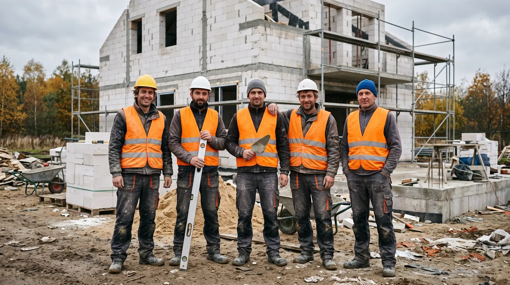
Trzy rodzaje zleceń, jeden sposób pracy: własne brygady, materiał po naszej stronie, harmonogram ustalony przed startem.
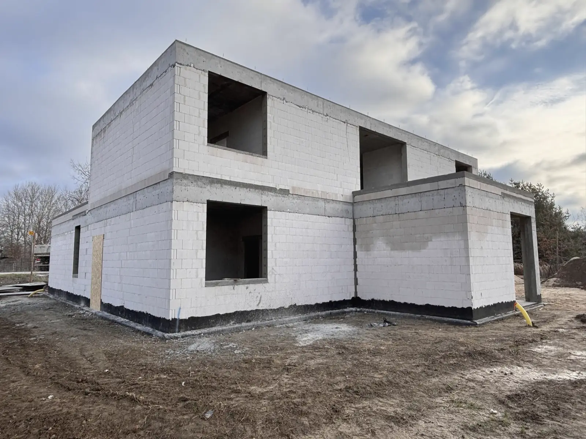
Od fundamentów po stan surowy otwarty, a na życzenie do stanu deweloperskiego. Każdy etap wykonujemy własnymi brygadami i z materiałów, które sami zamawiamy i odbieramy na budowie.
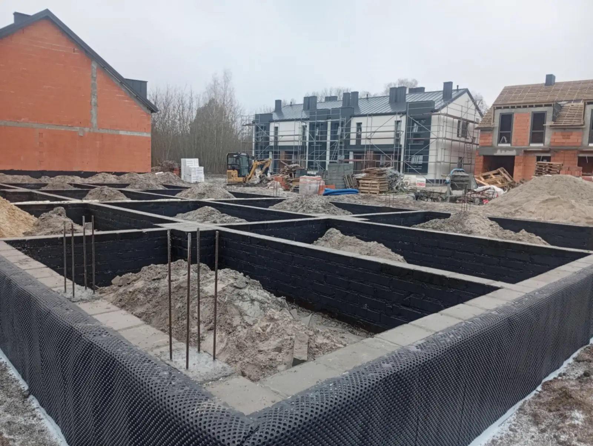
Małe i średnie osiedla: od pojedynczych segmentów po pełne szeregowce. Współpracujemy z inwestorami prywatnymi, którzy budują kilka domów lub bliźniaków naraz i potrzebują jednego wykonawcy, który dopilnuje całości.
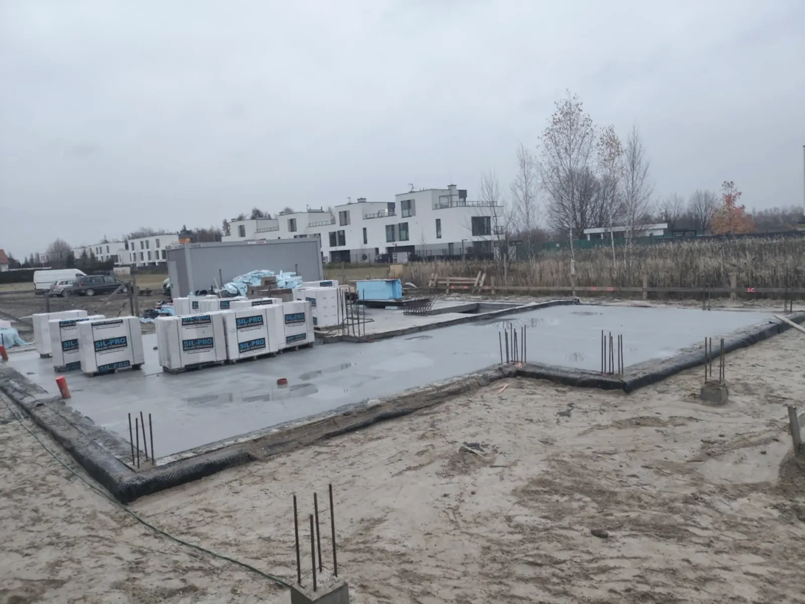
Specjalizujemy się w realizacjach z materiałem: to my organizujemy zakupy, dostawy i logistykę, pilnujemy jakości i kosztów. W trakcie budowy doradzamy przy zmianach projektowych i rozwiązaniach technicznych.
Zdjęcia z telefonów brygadzistów, nie z banku zdjęć. Przeciągnij, żeby przejrzeć.
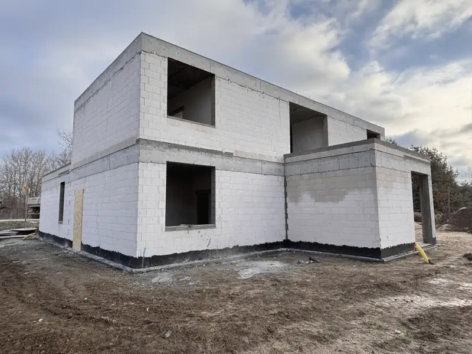
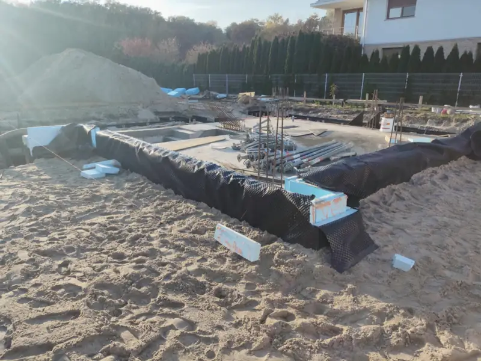
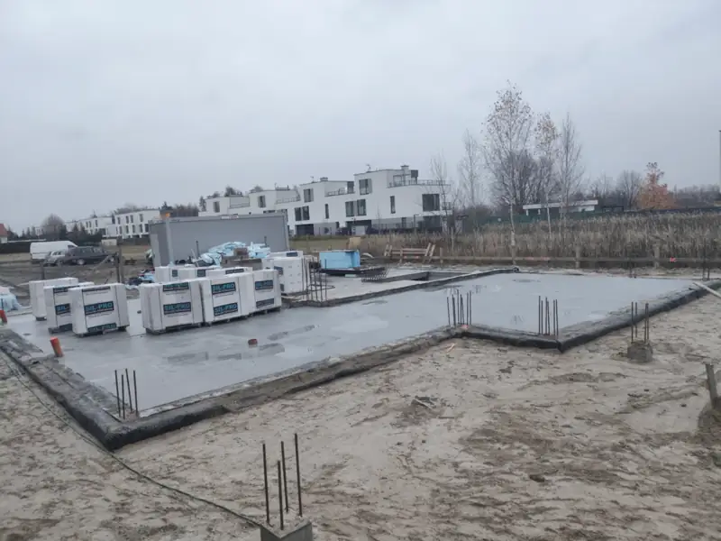
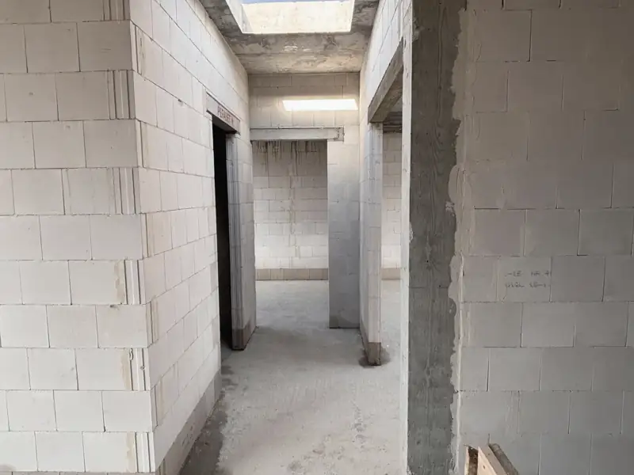
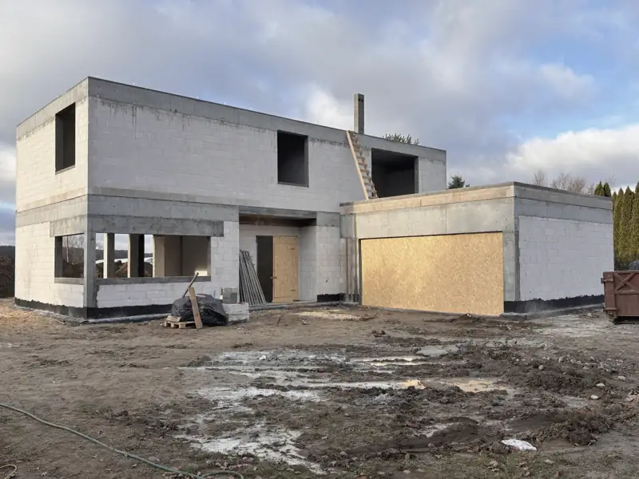
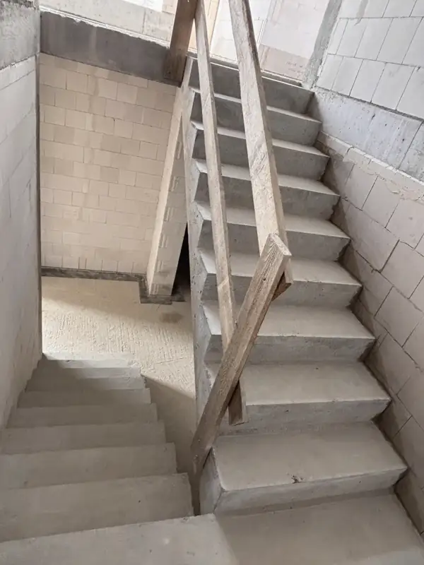
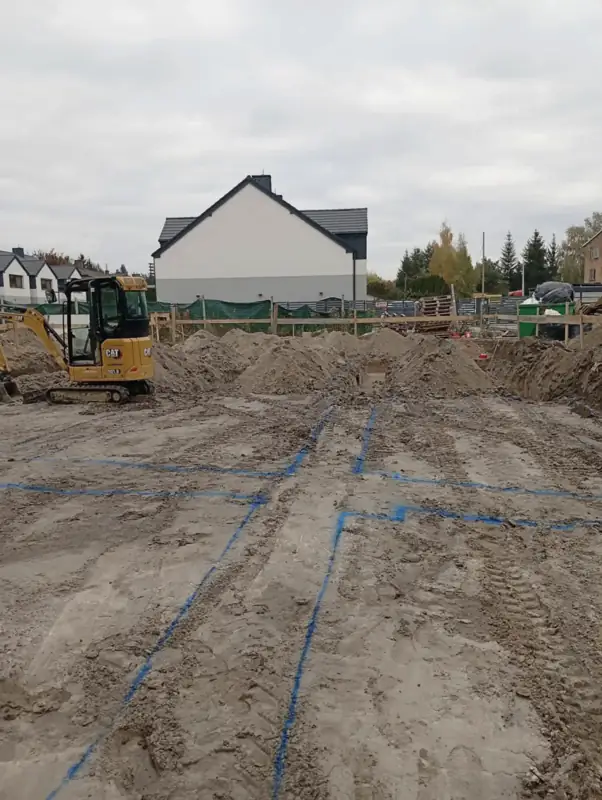
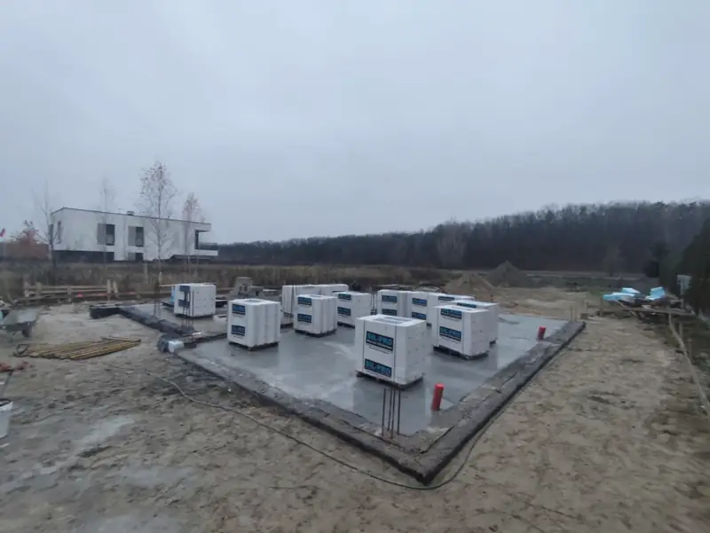
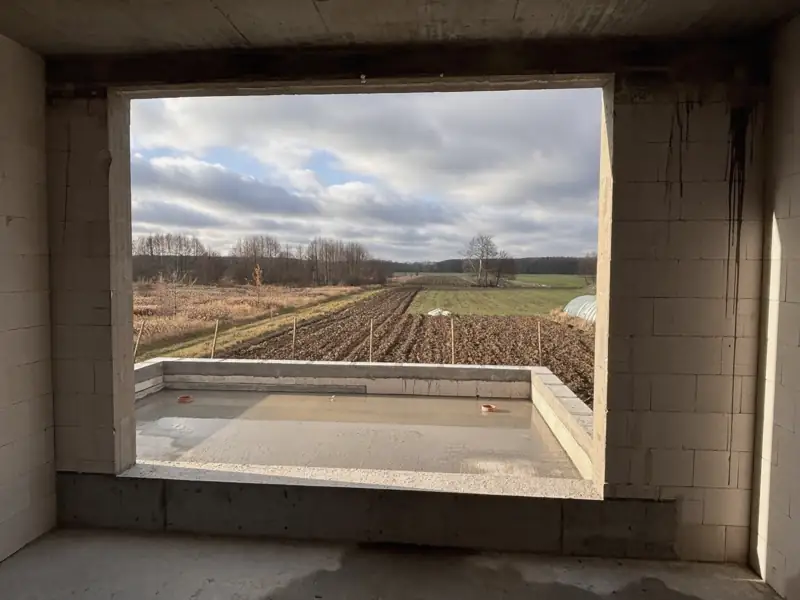
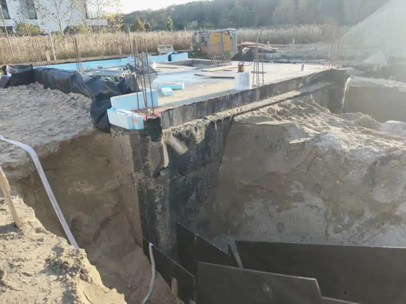
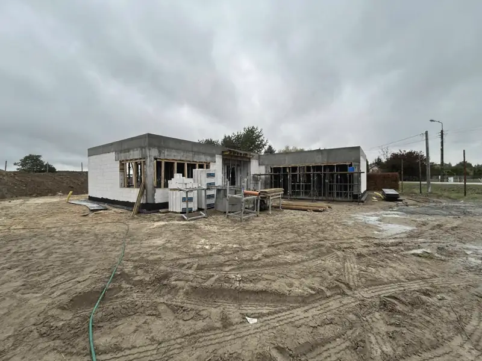
Tak wygląda typowy harmonogram domu około 150 m². Przewijaj, żeby przejść przez etapy; dokładne terminy ustalamy po podpisaniu umowy.
Geodeta, koparka, chudy beton, zbrojenie i betonowanie ław.
Bloczki, izolacja, zasypka warstwami, zbrojenie i wylanie płyty.
Silikat warstwa po warstwie, nadproża, wieniec, szalunek i strop.
Ściany piętra, kominy, wieniec pod dach.
Więźba lub stropodach, odbiór stanu surowego otwartego.
Ponad sto budów na Mazowszu. Trzy z nich opisujemy dokładniej, z zakresem prac i tym, co było w nich wymagające.
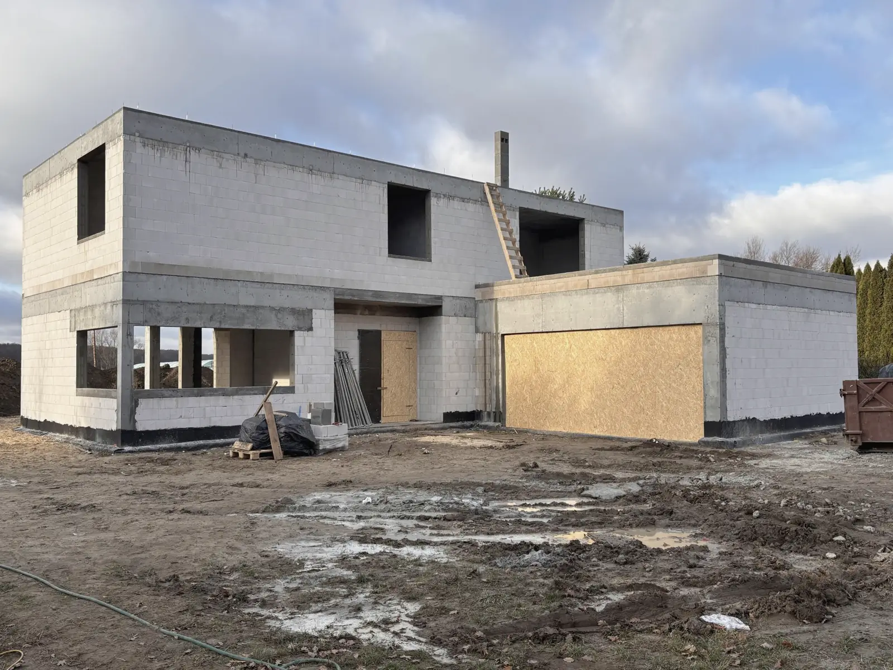
Nowoczesny dom z piwnicą. Nietypowe rozwiązanie konstrukcyjne: schodkowa ława łącząca płytę fundamentową części podpiwniczonej z resztą budynku. Realizacja wymagała ścisłej współpracy brygad i szczegółowego nadzoru technicznego.
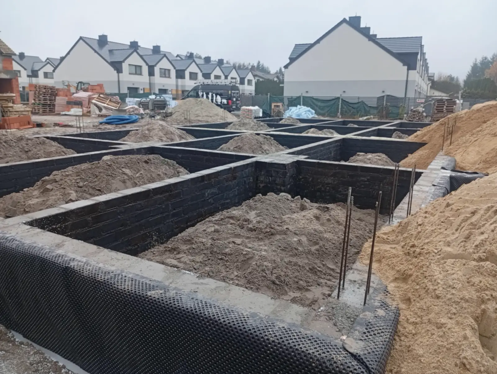
Część osiedla 18 lokali mieszkalnych. Zadaniem JAS-BUD była solidna konstrukcja nośna i harmonijne połączenie z pozostałymi segmentami. Prace szły równolegle z sąsiednimi budynkami, co wymagało dokładnej organizacji i logistyki.
Duży, nowoczesny dom w technologii murowanej z silikatów i konstrukcji żelbetowych. Rozbudowana bryła i wymagające rozwiązania konstrukcyjne. Inwestor planuje dalszą rozbudowę i wykończenie w standardzie premium.
Opinie z wizytówki Google, cytowane dosłownie, z nazwiskami autorów.
Serdecznie polecam usługi. W ekspresowym tempie i świetnej jakości postawili nam wymarzony dom. Kontakt z panem Przemkiem i Konradem zawsze bardzo pozytywny i bezproblemowy. Polecam!
Szczerze polecam firmę Jas-Bud. To fachowcy, którzy znają się na tym co robią. Zarówno Właściciel jak i Pracownicy brygady wykonują swoje zadania rzetelnie. Dbałość o najwyższą jakość i końcowy efekt wykraczał poza stan surowy, który zleciłem (Właściciel współpracował z kolejnymi ekipami wstawiajacymi okna czy wykonującymi tynki). Przepływ informacji między nimi a kierownikiem budowy na najwyższym poziomie. Jeżeli coś było dla mnie nie oczywiste to Właściciel przystępnie tłumaczyl po co i dlaczego w jakiś sposób jest wykonywane. Każdemu polecam i sam bym ponownie zlecił wykonanie domu tej firmie.
Polecam usługi firmy Jas-Bud która w tym roku bardzo sprawnie wybudowała dla mnie 5 domów w zabudowie szeregowej. Przez cały okres współpraca układała się wzorowo zarówno z właścicielem firmy Jas-Bud jak również ekipą budowlaną pod przewodnictwem Pana Romana dzięki czemu jako inwestor miałem spokojną głowę że wszystko idzie sprawnie i zgodnie z planem. Polecam i dziękuję ekipie Jas-Bud!
Od rzetelnie przygotowanej oferty i umowy poprzez sprawnie prowadzone etapy na budowie i doradzanie w ich trakcie. Bardzo dobry kontakt, wykonawca godny polecenia.
Współpraca z firmą Jas-Bud to czysta przyjemność. Szybko, Rzetelnie i Profesjonalnie. Kontakt i doradztwo jak i podpowiedzi w rozwiązaniach budowlanych na 5 + . Gorąco polecam.
Bardzo dobra współpraca. Wszystko zrobione na czas .
Najczęstsze pytania, które słyszymy przy pierwszej rozmowie.
Czas budowy zależy od projektu, warunków gruntowych i zakresu prac, ale stan surowy otwarty realizujemy średnio w 8–14 tygodni. Przed rozpoczęciem ustalamy dokładny harmonogram i trzymamy się go. To możliwe, bo pracujemy zawsze własnymi brygadami. Wstępny termin rozpoczęcia podajemy już na etapie wyceny, dokładny harmonogram po podpisaniu umowy.
Wszystkie prace wykonują nasze stałe brygady. Nie korzystamy z podwykonawców, dzięki temu kontrolujemy jakość, terminowość i cały przebieg budowy. Od pierwszego dnia wiesz, kto buduje Twój dom i kto odpowiada za każdy etap.
Najczęściej z materiałem: to my organizujemy zakupy, dostawy, logistykę i kontrolujemy jakość, więc inwestor nie pilnuje transportów. Jeśli masz już materiał albo własne źródło, ustalamy to na etapie wyceny.
Tak. Oprócz domów jednorodzinnych budujemy małe osiedla, bliźniaki i szeregowce, zarówno dla inwestorów prywatnych, jak i osób inwestujących w kilka domów naraz. Pomagamy w planowaniu etapów i dostaw dla całej inwestycji.
Tak. Firma jest zarejestrowana w Ostrołęce, ale brygady pracują na budowach w Warszawie i okolicach, m.in. w Wilanowie, Jankach i pod Konstancinem. Dojazd, zakwaterowanie ekip i logistyka są po naszej stronie i nie wpływają na harmonogram.
Tak. Standardowo przekazujemy budynek w stanie surowym otwartym, ale na życzenie inwestora prowadzimy prace dalej, do stanu deweloperskiego. Zakres ustalamy przed startem albo w trakcie, gdy zapadnie decyzja.
Zadzwoń albo zostaw dane. Oddzwonimy, przejrzymy projekt i podamy wstępny termin oraz wycenę.